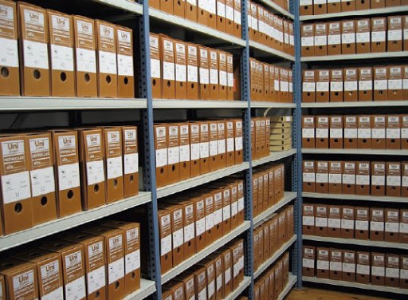

GUARDIA Y CUSTODIA
El servicio de guarda y custodia de documentación de MODOC abarca además de la guarda digital y física, el seguimiento de los requerimientos de documentación física por parte del cliente y el expurgo certificado de la documentación obsoleta.
PROFESIONALES PARA SUS ARCHIVOS
Encontrar una aguja en un pajar es un juego para nuestros expertos.
TODO EN SU LUGAR,SIEMPRE
El personal de MODOC está altamente especializado en todas las ramas de la gestión de archivos.
Además, nuestros empleados están formados en los últimos avances del software de Ingeniería Documental, por lo que conocen las mejores soluciones digitales para cada empresa concreta. Con MODOC, los archivos de su empresa estarán en manos de los mejores profesionales, quienes servirán de gran apoyo en tareas de mantenimiento de archivos, bibliotecas, centros de documentación y datos, dentro de cualquier sector: clínico, financiero, fiscal y jurídico, etc.
Nuestros técnicos de documentación harán que su empresa obtenga beneficios en un tiempo récord, al ahorrar costes de almacenaje y gestión documental, así como tiempo en organización y uso de estos archivos. Confíe siempre en los profesionales y obtendrá resultados sorprendentes que mejorarán la fluidez en los procesos de su empresa.


CONTRATAR SERVICIO DE GUARDA DOCUMENTAL
Contrate nuestros servicios.
- Benefíciese de la mejor labor de consultoría con nuestros profesionales en archivística.
- Cuente con un servicio de guarda física en nuestras instalaciones o en sus propias instalaciones.
- Mantenga sus documentos digitales seguros, contamos con todas las normas de seguridad necesarias para proteger su información
- Gestione sus documentos desde nuestra plataforma.
- Descubra cuánto puede ahorrar utilizando un servicio especializado para su empresa.
- Mejore la gestión de sus archivos con la ayuda de los mejores técnicos en documentación.
- Encuentre las mejores soluciones en software de Gestión Documental.